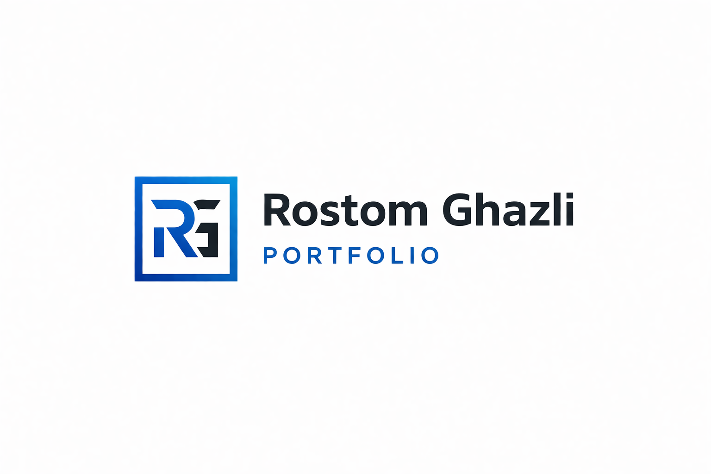

Projet scolaire
Ce portfolio est un site web conçu pour présenter mon profil, mon parcours, mes compétences ainsi que mes projets et expériences professionnelles. Cette page met en avant sa structure, ses fonctionnalités, les technologies utilisées ainsi que plusieurs aperçus du design.

Type
Projet scolaire/personnels
Période
2025-2026
Statut
En Cours
Technologie principale
HTML / CSS
Ce portfolio est un site web conçu pour présenter mon profil, mon parcours, mes compétences ainsi que mes projets et expériences professionnelles. L’objectif est de mettre en valeur mon travail de manière claire, structurée et professionnelle, tout en proposant une interface moderne et responsive. Ce projet m’a permis de concevoir une vitrine personnelle adaptée à une recherche de stage ou d’alternance dans le domaine du développement web.
Mise en avant de mon parcours, de mes compétences et de mes objectifs professionnels.
Accès à des pages détaillées pour chaque projet avec description, technologies et visuels.
Timeline présentant mes stages et mon évolution dans le développement web.
Possibilité de me contacter directement via le site ou d’accéder à mes profils professionnels.
Ce projet m’a permis de concevoir un site complet en mettant l’accent sur le design, l’organisation du contenu et l’expérience utilisateur. J’ai développé mes compétences en intégration avec Tailwind CSS, en structuration de pages et en conception d’interfaces modernes et responsive. La création de ce portfolio m’a également permis de prendre du recul sur mon parcours, de valoriser mes projets et de mieux présenter mes compétences. Il constitue aujourd’hui un support essentiel dans ma recherche d’opportunités professionnelles.